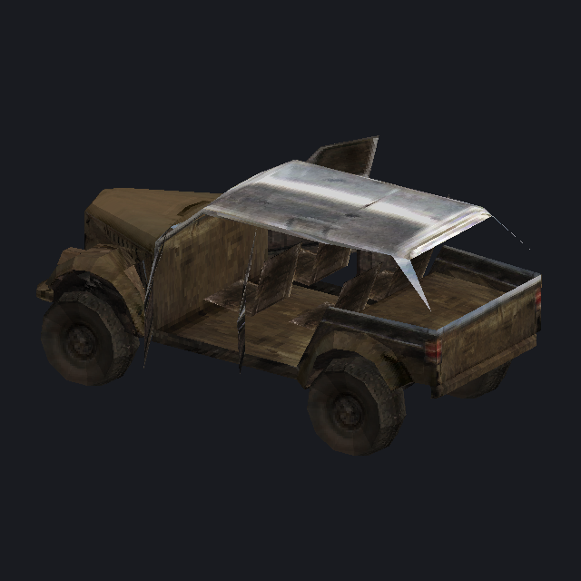
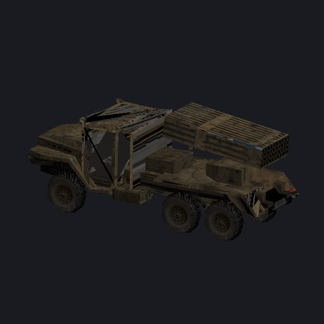
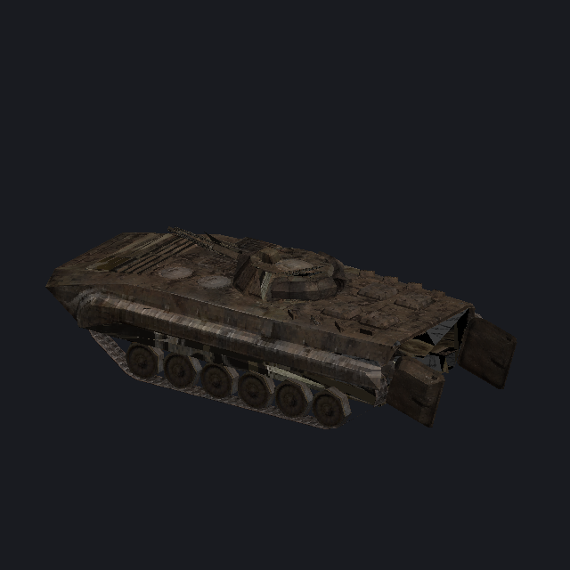
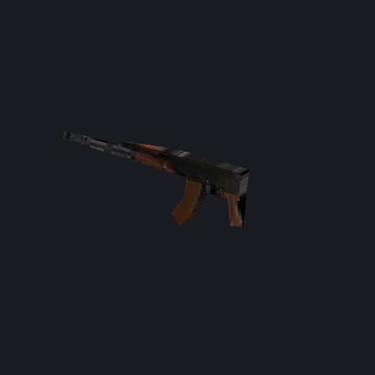
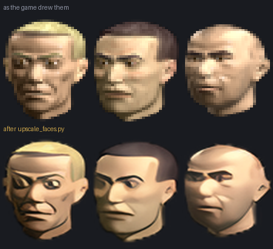

Soldiers of Anarchy · 2002
It still starts on a modern machine, but only just: it wants a display mode nobody has any more, its interface was drawn for 800 by 600, and a good deal of what it can do was never written down anywhere. So we wrote it down.
objects.ubn holds every soldier, vehicle, building and tree
the game draws, in a format called .diff3D that is documented nowhere.
It turned out to be the same serialiser the save games use, with one byte changed.
1241 of them now read - with their textures, and with every part in its place. The twelve that do not are camera paths and have no geometry in them at all.
Every file still carries the path of the .ASE its authors
exported it from, so the modellers' own directory layout is in there:
C:\proof\units\rager\rager_h.ASE.
Getting the parts into the right places took three wrong answers first. The file carries a tree, and it is the last thing in it - a table of chunks written depth first, where a field we had read as a flag is a child count. A vehicle's wheels hang off the root and its doors off the body, so a door takes three matrices and a wheel takes one; no rule about which parts to transform could ever have got both right.

objects.ubn and drawn by
diff3d.py, textures and all.



upscale_faces.py.That is how big a face is in the sheet. On a 1920 by 1080 screen the game blows it up to 75 by 94, which is why every portrait was a mosaic.
The measurement mattered more than the model did. An earlier note said the extra size was thrown away; reading the loader said otherwise, and a doubled sheet does survive as far as the screen.
The right model turned out to be the anime one - a photographic upscaler invents skin texture that was never there.
The game's own log, and cheats sent into the running process. Drivable from a phone on the same network, because leaving full screen loses the window.
The running mission's map, read out of the game's memory while it plays.
What is in a save without loading it - and what each soldier carries, which can be swapped for anything in the catalog.
All 1253 of them, drawn with their textures and turned under the mouse. WPF's own 3D, so the package gained code and no dependency.
Every item and vehicle with what the game says about it, built out of the game's own data.
build-package.ps1 turns an installed
copy into a folder that runs: the wrapper, the settings, the fixes, and the launcher
compiled by csc with no project file.
TRES_ key.
Finding it took a false positive that looked like success for two days.Our own writing and our own code. The game is not in it - no archives, no executable, no data. The tools work against a copy you install yourself.
research/ what was worked out, one document per subject research/tools/ the tools, in Python research/tools/launcher/ the launcher, C# against WPF analysis/ readers for the installation disc and the executable
The most useful document is probably TODO.md, and not for what is still open. A good number of its entries record something that was tried and did not work, and why it looked as though it had.